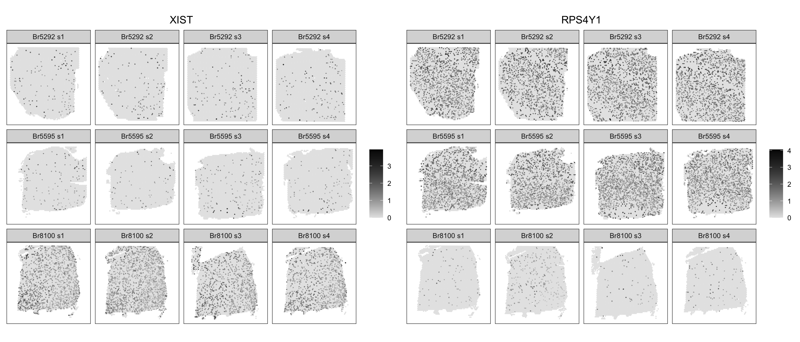

library(spatialLIBD)
spe <- fetch_data(type = "spe")2 Exploration with spatialLIBD
2.1 Intro
We chose to develop our method on an unrelated DLPFC dataset available through the spatialLIBD package. This way we can explore how to identify batch-biased features while being blinded to how the approach will impact our dataset.
First, we chose a feature selection method that can incorporate a batch variable into the model. Next, we compared the per-gene ranks and dispersion values when the model was run with and without a batch effect. Finally, we confirmed that the genes identified as biased did exhibit expression patterns consistent with non-biological technical noise.
spatialLIBD example dataset
The spatialLIBD dataset was collected from the same brain region as our data (DLPFC) and was also sequenced with 10X Visium. This dataset has 3 subjects and 4 samples from each subject. Because there was no slide metadata available, we investigated whether batch = subject influenced the top features.
subject
sample_id Br5292 Br5595 Br8100
151507 4226 0 0
151508 4384 0 0
151509 4789 0 0
151510 4634 0 0
151669 0 3661 0
151670 0 3498 0
151671 0 4110 0
151672 0 4015 0
151673 0 0 3639
151674 0 0 3673
151675 0 0 3592
151676 0 0 34602.2 Feature selection comparison
We examined two different models of feature selection. The first model is from scran and utilizes per-gene variance to identify top features. This method, here referred to as the mean-variance model, is performed after normalization of the counts matrix. We opted to use the modelGeneVarByPoisson function which assumes that the mean-variance relationship trend due to technical noise follow a poisson distribution.
mv <- modelGeneVarByPoisson(logcounts(spe))The second approach from scry fits a model to the raw counts matrix and assumes that genes with no biologically meaningful expression pattern will fit a binomial distribution. The greater the per-gene deviance from this null model, the more likely the expression of said gene is biologically meaningful as a top feature. We refer to this method as the binomial deviance model.
bd <- devianceFeatureSelection(counts(spe), fam="binomial")2.2.1 How do SVGs rank in each model?
Our goal is to determine whether SVGs exhibit biased expression according of different batch variables. Therefore, the ideal feature selection model would similarly identify SVGs as highly ranked features.
We ran the nnSVG model on the spatialLIBD data to identify SVGs. We next examined the rank of these features in the mean-variance model and the binomial deviance model.
libd.svgs = read.csv("processed-data/libd-all_nnSVG_p-05-features-df.csv",
row.names=1)We found that the mean-variance model ranked a considerable portion of the SVGs as some of the lowest features in the dataset. In contrast, all the SVGs were ranked highly with the binomial deviance model.
Figure 2.1 Bionomial deviance model better corresponds to nnSVG results

2.2.2 Are top ranked genes representative of layer-specific differences in gene expression?
A separate but related property of the ideal feature selection model would be to generate a list of top features that are consistent with known DLPFC layer markers and comprise markers of all layer domains. We used the recently published list of DLPFC layer markers from Huuki-Meyers et. al, 2024 Table S8 to characterize the top 3000 features of the mean-variance and binomial deviance models.
lm.df = read.csv("processed-data/TableS8_filtered-layer-markers.csv")These results further supported the selection of the binomial deviance model, as the 3000 most highly ranked features represented significant markers for all DLPFC cortical layers. In contrast, the 3000 most highly ranked features from the mean-variance model were overwhelmingly L1 and white matter (WM) markers.
Figure 2.2 Binomial deviance model better corresponds to known DLPFC layer markers

2.3 Influence of batch in binomial deviance model output
Having picked a feature selection method, next we compared the per-gene ranks and deviance values when the model was run with and without a batch effect. Because the spatialLIBD data has 4 samples per subject, we used batch= subject.
bd.batch <- devianceFeatureSelection(counts(spe), fam="binomial",
batch=as.factor(spe$subject))Including a subject-batch effect doesn’t dramatically change the rank of the SVGs.
Figure 2.3 SVGs are consistently highly ranked in binomial deviance model with and without batch

We see that >90% of spatialLIBD SVGs are ranked in the top 3000 features by either binomial deviance model.
quantile(bd.df[libd.svgs$gene_id,"rank"], probs=seq(0,1,.1)) 0% 10% 20% 30% 40% 50% 60% 70% 80% 90% 100%
1.0 200.6 400.2 606.8 830.4 1060.0 1316.8 1601.2 1913.6 2256.8 4077.0 quantile(bd.batch.df[libd.svgs$gene_id,"rank"], probs=seq(0,1,.1)) 0% 10% 20% 30% 40% 50% 60% 70% 80% 90% 100%
1.0 199.2 401.2 606.8 830.4 1060.0 1316.6 1603.2 1917.8 2271.4 5903.0 This finding suggests that scry::devianceFeatureSelection could be a good alternative to nnSVG feature selection if there is considerable technical variation in the experiment/ dataset. It can also be run much faster.
2.3.1 Highly deviant genes
Now we can examine the influence of batch= subject on the per-gene deviance values and ranks. Since we propose that using a binomial deviance model to select top features is a possible alternative to nnSVG feature selection we will first examine the top features as ranked based on the binomial deviance model.
subject.df <- left_join(bd.df, bd.batch.df,
by=c("gene", "gene_name","is_svg"),
suffix=c("_default","_subject"))Recall that the greater the per-gene deviance, the more likely the expression of said gene is biologically meaningful. Therefore, a decrease in deviance when including batch= subject indicates that subject identity accounted for variation in gene expression that was previously considered to be biologically meaningful. Not all magnitudes of change in deviance are noteworthy, so we examined the change in deviance relative to the final deviance value in the batch effect model.
subject.df$d.diff = (subject.df$dev_default-subject.df$dev_subject)/subject.df$dev_subjectSince more lowly ranked features are considered more important, an increase in rank when includingbatch= subject indicates that the relative importance of the feature is diminished once subject identity is accounted for.
subject.df$r.diff = subject.df$rank_subject-subject.df$rank_defaultFigure 2.4 Influence of batch on highly deviant genes (n= 3000)

2.3.1.0.1 to do:
JACQUI YOU NEED TO SUMMARIZE THE ABOVE PLOTS HERE AND WRITE A TRANSITION TO THE NEXT PLOT
Our approach suggests that even when batch correction is performed, there can still be some highly ranked genes that exhibit the potential for strong subject-bias.
We can see that the mitochondrial genome (red; often removed from feature lists) exhibits no change in rank but several genes show relatively strong change in deviance residuals with batch= subject. Considering that the mitochondrial genome is often excluded, there are two additional features that may be biased (RPS26, MT3). Examining a dotplot of the scaled expression of these potentially subject-biased genes suggests that it is worth looking further into whether these features are worth including as input to a clustering algorithm.
Figure 2.5 Mitochondrial genome and potentially subject-biased genes

2.3.2 Spatially variable genes
Now we will examine whether the change in deviance and the change in rank also highlight SVGs that are potentially subject-biased.
top.svg.df = filter(subject.df, gene %in% libd.svgs$gene_id)Our approach indicates that the two genes with the strongest potential to exhibit subject-biased expression patterns in a way that confounds biological variation are also SVGs (MTRNR2L1, MTRNR2L8). In addition we identify Xist as subject-biased. Xist is a lncRNA that is robustly expressed in females due to its importance for X inactivation. The identification of Xist as a subject-biased gene indicates that our approach works as intended (picking up features with non-spatially relevant sources of variation).
Figure 2.6 Influence of batch on SVGs (n= 1967)

2.4 Spatial expression plots confirm bias
Our approach suggests that even when batch correction is performed, there can still be some highly ranked genes that exhibit the potential for strong subject-bias. Further, three of these potentially biased features are SVGs. To confirm a strong influence of subject/ brain donor for these genes we looked at the spatial expression plots.
We first examine XIST (spatially variable) and RPS4Y1 (highly deviant), given that both genes are located on sex chromosomes and therefore ought to exhibit strong differences in expression between subjects.
Figure 2.7 Sex-linked genes exhibit strong subject bias

The two remaining features with potential subject bias (MTRNR2L1 and MTRNR2L8) are both highly deviant and spatially variable. These lncRNAs have an unknown biological function. Spatial expression plots illustrate that these features display strong subject-biased expression and are also clearly enriched in certain spatial domains. MTRNR2L1 and MTRNR2L8 are perfect examples of features that may introduce noise if included in spatial domain clustering.
Figure 2.8 Successful identification subject-biased, spatially variable genes

Lastly, RPS26 and MT3 do not display such strong subject-specific expression. This indicates that our original thresholds chosen without consideration of the location of features from the mitochondrial genome was most appropriate.
Figure 2.9 RPS26 and MT3 should not be excluded due to bias